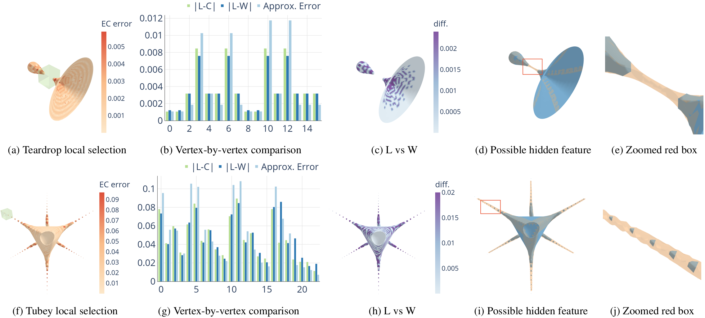

About Me
Welcome to my website! I am a postdoctoral research associate at the scientific computing and imaging SCI institute under the mentorship of Prof. Chris Johnson. I received my bachelor's degree in Physics and Computer Science from the University of Oregon in 2016 and my Ph.D. in Computing from the University of Utah in 2022. I was advised by Prof. Martin Berzins and Prof. Mike Kirby for my Ph.D. dissertation and by Prof. Hank Child for my undergraduate thesis.
Research Interests
My research focuses on the design and development of novel, robust, and uncertainty-aware computational and visualization frameworks for science and engineering applications, with a focus on:
- Uncertainty quantification and visualization
- Structure-preserving high-order polynomial approximation
- Robust high-dimensional data reduction and analysis
- High-performance optimization techniques
Submited Manuscripts
-
1. Hyper-differential sensitivity analysis with respect to model discrepancy: Prior Distributions
Joseph Hart, Bart van Bloemen Waanders, Jixian Li, T. A. J. Ouermi, Chris R Johnson. arXiv preprint arXiv:2504.19812, 2025.
Hyper-differential sensitivity analysis with respect to model discrepancy was recently developed to enable uncertainty quantification for optimization problems. The approach consists of two primary steps: (i) Bayesian calibration of the discrepancy between high- and low-fidelity models, and (ii) propagating the model discrepancy uncertainty through the optimization problem. When high-fidelity model evaluations are limited, as is common in practice, the prior discrepancy distribution plays a crucial role in the uncertainty analysis. However, specification of this prior is challenging due to its mathematical complexity and many hyper-parameters. This article presents a novel approach to specify the prior distribution. Our approach consists of two parts: (1) an algorithmic initialization of the prior hyper-parameters that uses existing data to initialize a hyper-parameter estimate, and (2) a visualization framework to systematically explore properties of the prior and guide tuning of the hyper-parameters to ensure that the prior captures the appropriate range of uncertainty. We provide detailed mathematical analysis and a collection of numerical examples that elucidate properties of the prior that are crucial to ensure uncertainty quantification.
-
2. A Fast Iterative Robust Principal Component Analysis Method
T. A. J. Ouermi, Jixian Li, Chris R Johnson. arXiv preprint arXiv:2506.16013, 2025.
Principal Component Analysis (PCA) is widely used for dimensionality reduction and data analysis. However, PCA results are adversely affected by outliers often observed in real-world data. Existing robust PCA methods are often computationally expensive or exhibit limited robustness. In this work, we introduce a Fast Iterative Robust (FIR) PCA method by efficiently estimating the inliers center location and covariance. Our approach leverages Incremental PCA (IPCA) to iteratively construct a subset of data points that ensures improved location and covariance estimation that effectively mitigates the influence of outliers on PCA projection. We demonstrate that our method achieves competitive accuracy and performance compared to existing robust location and covariance methods while offering improved robustness to outlier contamination. We utilize simulated and real-world datasets to evaluate and demonstrate the efficacy of our approach in identifying and preserving underlying data structures in the presence of contamination.
Publications
Journals
-
1. Fast HARDI Uncertainty Quantification and Visualization with Spherical Sampling
Tark Patel, Tushar M Athawale, T. A. J. Ouermi, Chris R Johnson. Computer Graphics Forum, 2025.
In this paper, we study uncertainty quantification and visualization of orientation distribution functions (ODF), which corresponds to the diffusion profile of high angular resolution diffusion imaging (HARDI) data. The shape inclusion probability (SIP) function is the state-of-the-art method for capturing the uncertainty of ODF ensembles. The current method of computing the SIP function with a volumetric basis exhibits high computational and memory costs, which can be a bottleneck to integrating uncertainty into HARDI visualization techniques and tools. We propose a novel spherical sampling framework for faster computation of the SIP function with lower memory usage and increased accuracy. In particular, we propose direct extraction of SIP isosurfaces, which represent confidence intervals indicating spatial uncertainty of HARDI glyphs, by performing spherical sampling of ODFs. Our spherical sampling approach requires much less sampling than the state-of-the-art volume sampling method, thus providing significantly enhanced performance, scalability, and the ability to perform implicit ray tracing. Our experiments demonstrate that the SIP isosurfaces extracted with our spherical sampling approach can achieve up to 8164× speedup, 37282× memory reduction, and 50.2% less SIP isosurface error compared to the classical volume sampling approach. We demonstrate the efficacy of our methods through experiments on synthetic and human-brain HARDI datasets.
-
2. Algorithm 1041: HiPPIS—A High-order Positivity-preserving Mapping Software for Structured Meshes
T. A. J. Ouermi, Robert M Kirby, Martin Berzins. ACM Transactions on Mathematical Software, 2024.
Polynomial interpolation is an important component of many computational problems. In several of these computational problems, failure to preserve positivity when using polynomials to approximate or map data values between meshes can lead to negative unphysical quantities. Currently, most polynomial-based methods for enforcing positivity are based on splines and polynomial rescaling. The spline-based approaches build interpolants that are positive over the intervals in which they are defined and may require solving a minimization problem and/or system of equations. The linear polynomial rescaling methods allow for high-degree polynomials but enforce positivity only at limited locations (e.g., quadrature nodes). This work introduces open-source software (HiPPIS) for high-order data-bounded interpolation (DBI) and positivity-preserving interpolation (PPI) that addresses the limitations of both the spline and polynomial rescaling methods. HiPPIS is suitable for approximating and mapping physical quantities such as mass, density, and concentration between meshes while preserving positivity. This work provides Fortran and Matlab implementations of the DBI and PPI methods, presents an analysis of the mapping error in the context of PDEs, and uses several 1D and 2D numerical examples to demonstrate the benefits and limitations of HiPPIS.
-
3. ENO-based high-order data-bounded and constrained positivity-preserving interpolation
T. A. J. Ouermi, Robert M Kirby, Martin Berzins. Numerical Algorithms, 2023.
A number of key scientific computing applications that are based upon tensor-product grid constructions, such as numerical weather prediction (NWP) and combustion simulations, require property-preserving interpolation. Essentially non-oscillatory (ENO) interpolation is a classic example of such interpolation schemes. In the aforementioned application areas, property preservation often manifests itself as a requirement for either data boundedness or positivity preservation. For example, in NWP, one may have to interpolate between the grid on which the dynamics is calculated to a grid on which the physics is calculated (and back). Interpolating density or other key physical quantities without accounting for property preservation may lead to negative values that are nonphysical and result in inaccurate representations and/or interpretations of the physical data. Property-preserving interpolation is straightforward when used in the context of low-order numerical simulation methods. High-order property-preserving interpolation is, however, nontrivial, especially in the case where the interpolation points are not equispaced. In this paper, we demonstrate that it is possible to construct high-order interpolation methods that ensure either data boundedness or constrained positivity preservation. A novel feature of the algorithm is that the positivity-preserving interpolant is constrained; that is, the amount by which it exceeds the data values may be strictly controlled. The algorithm we have developed comes with theoretical estimates that provide sufficient conditions for data boundedness and constrained positivity preservation. We demonstrate the application of our algorithm on a collection of 1D and 2D numerical examples, and show that in all cases property preservation is respected.
-
4. Performance optimization strategies for WRF physics schemes used in weather modeling
T. A. J. Ouermi, Robert M Kirby, Martin Berzins. International Journal of Networking and Computing, 2018.
Performance optimization in the petascale era and beyond in the exascale era has and will require modifications of legacy codes to take advantage of new architectures with large core counts and SIMD units. The Numerical Weather Prediction (NWP) physics codes considered here are optimized using thread-local structures of arrays (SOA). High-level and low-level optimization strategies are applied to the WRF Single-Moment 6-Class Microphysics Scheme (WSM6) and Global Forecast System (GFS) physics codes used in the NEPTUNE forecast code. By building on previous work optimizing WSM6 on the Intel Knights Landing (KNL), it is shown how to further optimize WMS6 and GFS physics, and GFS radiation on Intel KNL, Haswell, and potentially on future micro-architectures with many cores and SIMD vector units. The optimization techniques used herein employ thread-local structures of arrays (SOA), an OpenMP directive, OMP SIMD, and minor code transformations to enable better utilization of SIMD units, increase parallelism, improve locality, and reduce memory traffic. The optimized versions of WSM6, GFS physics, GFS radiation run 70, 27, and 23 faster (respectively) on KNL and 26, 18 and 30 faster (respectively) on Haswell than their respective original serial versions. Although this work targets WRF physics schemes, the findings are transferable to other performance optimization contexts and provide insight into the optimization of codes with complex physical models for present and near-future architectures with many core and vector units.
{kind=link}
{kind=link}
{kind=link}
{kind=link}
Workshops and Conferences
-
1. Efficient Probabilistic Visualization of Local Divergence of 2D Vector Fields with Independent Gaussian Uncertainty
T. A. J. Ouermi, Eric Li, Kenneth Moreland, Dave Pugmire, Chris R Johnson, Tushar M. Athawale. (To appear) IEEE Workshop, 2025.
Presents an efficient approach for probabilistic visualization of local divergence in 2D vector fields under independent Gaussian uncertainty. This work focuses on visualizing uncertainty of local divergence of two-dimensional vector fields. Divergence is one of the fundamental attributes of fluid flows, as it can help domain scientists analyze potential positions of sources (positive divergence) and sinks (negative divergence) in the flow. However, uncertainty inherent in vector field data can lead to erroneous divergence computations, adversely impacting downstream analysis. While Monte Carlo (MC) sampling is a classical approach for estimating divergence uncertainty, it suffers from slow convergence and poor scalability with increasing data size and sample counts. Thus, we present a two-fold contribution that tackles the challenges of slow convergence and limited scalability of the MC approach. (1) We derive a closed-form approach for highly efficient and accurate uncertainty visualization of local divergence, assuming independently Gaussian-distributed vector uncertainties. (2) We further integrate our approach into Viskores, a platform-portable parallel library, to accelerate uncertainty visualization. In our results, we demonstrate significantly enhanced efficiency and accuracy of our serial analytical (speed-up up to 1946) and parallel Viskores (speed-up up to 19698X) algorithms over the classical serial MC approach. We also demonstrate qualitative improvements of our probabilistic divergence visualizations over traditional mean-field visualization, which disregards uncertainty. We validate the accuracy and efficiency of our methods on wind forecast and ocean simulation datasets.
-
2. Uncertainty Tube Visualization of Particle Trajectories
Jixian Li, T. A. J. Ouermi, Mengjiao Han, Chris R Johnson. (To appear) IEEE Workshop, 2025.
Predicting particle trajectories with neural networks (NNs) has substantially enhanced many scientific and engineering domains. However, effectively quantifying and visualizing the inherent uncertainty in predictions remains challenging. Without an understanding of the uncertainty, the reliability of NN models in applications where trustworthiness is paramount is significantly compromised. This paper introduces the uncertainty tube, a novel, computationally efficient visualization method designed to represent this uncertainty in NN-derived particle paths. Our key innovation is the design and implementation of a superelliptical tube that accurately captures and intuitively conveys nonsymmetric uncertainty. By integrating well-established uncertainty quantification techniques, such as Deep Ensembles, Monte Carlo Dropout (MC Dropout), and Stochastic Weight Averaging-Gaussian (SWAG), we demonstrate the practical utility of the uncertainty tube, showcasing its application on both synthetic and simulation datasets.
-
3. Glyph-Based Uncertainty Visualization and Analysis of Time-Varying Vector Fields
T. A. J. Ouermi, Jixian Li, Zachary Morrow, Bart Van Bloemen Waanders, Chris R Johnson. IEEE Workshop on Uncertainty Visualization, 2024.
Environmental data have inherent uncertainty which is often ignored in visualization. Meteorological stations and doppler radars, including their time series averages, have a wealth of uncertainty information that traditional vector visualization methods such as meteorological wind barbs and arrow glyphs simply ignore. We have developed a new vector glyph to visualize uncertainty in winds and ocean currents. Our approach is to include uncertainty in direction and magnitude, as well as the mean direction and length, in vector glyph plots. Our glyph shows the variation in uncertainty, and provides fair comparisons of data from instruments, models, and time averages of varying certainty. We also define visualizations that incorporate uncertainty in an unambiguous manner as verity visualization. We use both quantitative and qualitative methods to compare our glyphs to traditional ones. Subjective comparison tests with experts are provided, as well as objective tests, where the information density of our new glyphs and traditional glyphs are compared. The design of the glyph and numerous examples using environmental data are given. We show enhanced visualizations, data together with their uncertainty information, that may improve understanding of environmental vector field data quality.
-

4. Estimation and visualization of isosurface uncertainty from linear and high-order interpolation methods
T. A. J. Ouermi, Jixian Li, Tushar M Athawale, Chris R Johnson. IEEE Workshop on Uncertainty Visualization, 2024.
Isosurface visualization is fundamental for exploring and analyzing 3D volumetric data. Marching cubes (MC) algorithms with linear interpolation are commonly used for isosurface extraction and visualization. Although linear interpolation is easy to implement, it has limitations when the underlying data is complex and high-order, which is the case for most real-world data. Linear interpolation can output vertices at the wrong location. Its inability to deal with sharp features and features smaller than grid cells can lead to an incorrect isosurface with holes and broken pieces. Despite these limitations, isosurface visualizations typically do not include insight into the spatial location and the magnitude of these errors. We utilize high-order interpolation methods with MC algorithms and interactive visualization to highlight these uncertainties. Our visualization tool helps identify the regions of high interpolation errors. It also allows users to query local areas for details and compare the differences between isosurfaces from different interpolation methods. In addition, we employ high-order methods to identify and reconstruct possible features that linear methods cannot detect. We showcase how our visualization tool helps explore and understand the extracted isosurface errors through synthetic and real-world data.
-
5. Visualizing Uncertainties in Ensemble Wildfire Forecast Simulations
Jixian Li, T. A. J. Ouermi, Chris R Johnson. IEEE Workshop on Uncertainty Visualization, 2024.
Wildfires pose substantial risks to our health, environment, and economy. Studying wildfires is challenging due to their complex interaction with the atmosphere dynamics and the terrain. Researchers have employed ensemble simulations to study the relationship among variables and mitigate uncertainties in unpredictable initial conditions. However, many wildfire researchers are unaware of the advanced visualization available for conveying uncertainty. We designed and implemented an interactive visualization system for studying the uncertainties of fire spread patterns utilizing band-depth-based order statistics and contour boxplots. We also augment the visualization system with the summary of changes in the burned area and fuel content to help scientists identify interesting temporal events. In this paper, we demonstrate how our system can support wildfire experts in studying fire spread patterns, identifying outlier simulations, and navigating to interesting times based on a summary of events.
-
6. OpenMP 4 Fortran Modernization of WSM6 for KNL
T. A. J. Ouermi, Aaron Knoll, Robert M Kirby, Martin Berzins. PEARC, 2017.
Parallel code portability in the petascale era requires modifying existing codes to support new architectures with large core counts and SIMD vector units. OpenMP is a well established and increasingly supported vehicle for portable parallelization. As architectures mature and compiler OpenMP implementations evolve, best practices for code modernization change as well. In this paper, we examine the impact of newer OpenMP features (in particular OMP SIMD) on the Intel Xeon Phi Knights Landing (KNL) architecture, applied in optimizing loops in the single moment 6-class microphysics module (WSM6) in the US Navy's NEPTUNE code. We find that with functioning OMP SIMD constructs, low thread invocation overhead on KNL and reduced penalty for unaligned access compared to previous architectures, one can leverage OpenMP 4 to achieve reasonable scalability with relatively minor reorganization of a production physics code.
-
7. Optimization strategies for WRF single-moment 6-class microphysics scheme (WSM6) on intel microarchitectures
T. A. J. Ouermi, Aaron Knoll, Robert M Kirby, Martin Berzins. CANDAR, 2017. Best Paper Award
Optimizations in the petascale era require modifications of existing codes to take advantage of new architectures with large core counts and SIMD vector units. This paper examines high-level and low-level optimization strategies for numerical weather prediction (NWP) codes. These strategies employ thread-local structures of arrays (SOA) and an OpenMP directive such as OMP SIMD. These optimization approaches are applied to the Weather Research Forecasting single-moment 6-class microphysics schemes (WSM6) in the US Navy NEPTUNE system. The results of this study indicate that the high-level approach with SOA and low-level OMP SIMD improves thread and vector parallelism by increasing data and temporal locality. The modified version of WSM6 runs 70x faster than the original serial code. This improvement is about 23.3x faster than the performance achieved by Ouermi et al. [1], and 14.9x faster than the performance achieved by Michalakes et al. [2]. Best Paper Award
{kind=link}
{kind=link}
{kind=link}
{kind=link}
{kind=link}
Other Manuscripts
-
1. Numerical testing of a new positivity-preserving interpolation algorithm
T. A. J. Ouermi, Robert M Kirby, Martin Berzins. arXiv preprint arXiv:2009.08535, 2020.
An important component of a number of computational modeling algorithms is an interpolation method that preserves the positivity of the function being interpolated. This report describes the numerical testing of a new positivity-preserving algorithm that is designed to be used when interpolating from a solution defined on one grid to different spatial grid. The motivating application for this work was a numerical weather prediction (NWP) code that uses a spectral element mesh discretization for its dynamics core and a cartesian tensor product mesh for the evaluation of its physics routines. This coupling of spectral element mesh, which uses nonuniformly spaced quadrature/collocation points, and uniformly-spaced cartesian mesh combined with the desire to maintain positivity when moving between these meshes necessitates our work. This new approach is evaluated against several typical algorithms in use on a range of test problems in one or more space dimensions. The results obtained show that the new method is competitive in terms of observed accuracy while at the same time preserving the underlying positivity of the functions being interpolated.
-
2. Accelerating Physics Schemes in Numerical Weather Prediction Codes and Preserving Positivity in the Physics-Dynamics Coupling
T. A. J. Ouermi. Ph.D. Thesis, The University of Utah, 2022.
Accurate forecasts have a direct impact on how we prepare for different weather events at personal, regional, and global levels. Many of the current numerical weather prediction (NWP) systems use legacy codes that are not adequately designed to take advantage of current and future modern compute resources. As we prepare for the Exascale era and the next generation of weather forecast systems, the ability of theses codes to efficiently use the compute resources is paramount for meeting the time requirement of forecasting and the desired resolution of 1 km. Many of the NWP codes are multidisciplinary in nature, combining building blocks from various areas of physics and atmospheric sciences that introduces the challenge of stitching these building blocks together. For example, some NWP systems use different meshes for the dynamics and the physics. This difference introduces negative and nonphysical quantities when mapping between physics and dynamics meshes. In this context, a mapping that does not preserve positivity leads to unstable simulation and a positive bias in the prediction of quantities such as moisture. This research focuses on 1) investigating different approaches for accelerating the physics schemes in NWP codes; and 2) developing a high-order positivity-preserving method (https://github.com/ouermijudicael/HiPPIS) for mapping solution values between different meshes.
-
3. Evaluating Spatiotemporal Search Structures for Analysis from Lagrangian Basis Flow
T. A. J. Ouermi. Undergraduate Thesis, The University of Oregon, 2016.
While flow visualization has traditionally been performed from the Eulerianperspective, the Lagrangian approach is gaining momentum in the scientificcommunity. This is because the Lagrangian approach offers more opportunities tomitigate I/O limitations than the traditional Eulerian approach. Particle trajectorytracing using the Lagrangian approach is performed by extracting Lagrangian basisflows, and using these flows to construct new trajectories from particle seedlocations. Tracing the trajectory of a given particle requires finding its neighboringbasis flows. Our work investigates different spatiotemporal search structures for thepurpose of particle trajectory tracing from Lagrangian basis flows. We conductedour study by evaluating the storage size, the build time, and the search time of thedifferent search structures over various configurations.
Software
{kind=link}
Teaching Experience
-
Co-Instructor, Computational Inverse Problems (CS 6962)
University of Utah, Fall 2024
Duties: Office hours, lectures, prepare homework
-
Co-Instructor, Decomposition Techniques for Data and Computational Science (CS 6962)
University of Utah, Fall 2023
Duties: Office hours, lectures, prepare homework
-
Teaching Assistant, Advanced Scientific Computing I (CS 6210)
University of Utah, Fall 2019
Duties: Office hours, guest lectures, prepare homework
-
Teaching Assistant, Introduction to Scientific Computing I (CS 6210)
University of Utah, Fall 2019
Duties: Office hours, guest lectures, prepare homework, manage TAs
-
Tutor, Department of Mathematics and Physics
University of Oregon, 2013–2016
Duties: 1-on-1 homework help, assist with in-class activities
-
TRiO STEM Tutor for Mathematics and Physics
Lane Community College, 2012–2013
Duties: 1-on-1 homework help
Awards & Honors
-
Best Paper Award, CANDAR 17
Nov. 2017
-
Travel Scholarship, University of Utah School of Computing (Richard Tapia Conference)
Sep. 2017
-
Travel Scholarship (Richard Tapia Conference)
Sep. 2016
-
International Cultural Service Program Scholarship (ICSP), University of Oregon
Sep. 2013
Curriculum Vitae
You can view or download my CV from the link below. It contains a detailed overview of my academic background, research experience, and professional achievements.